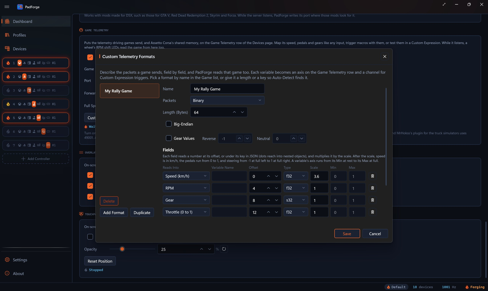
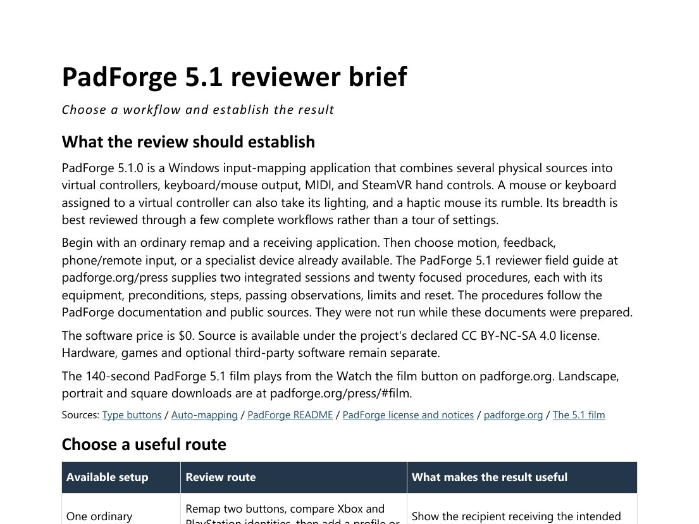
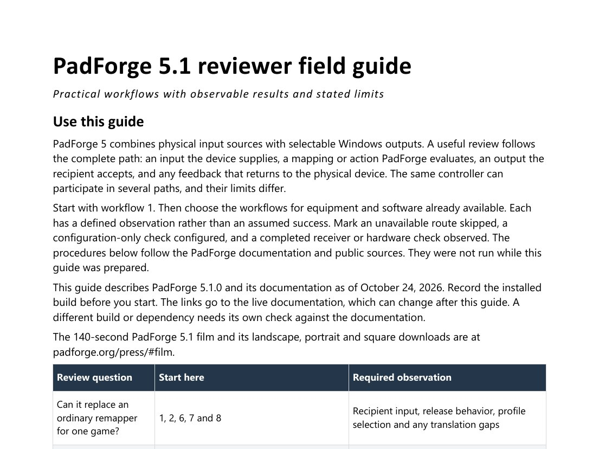
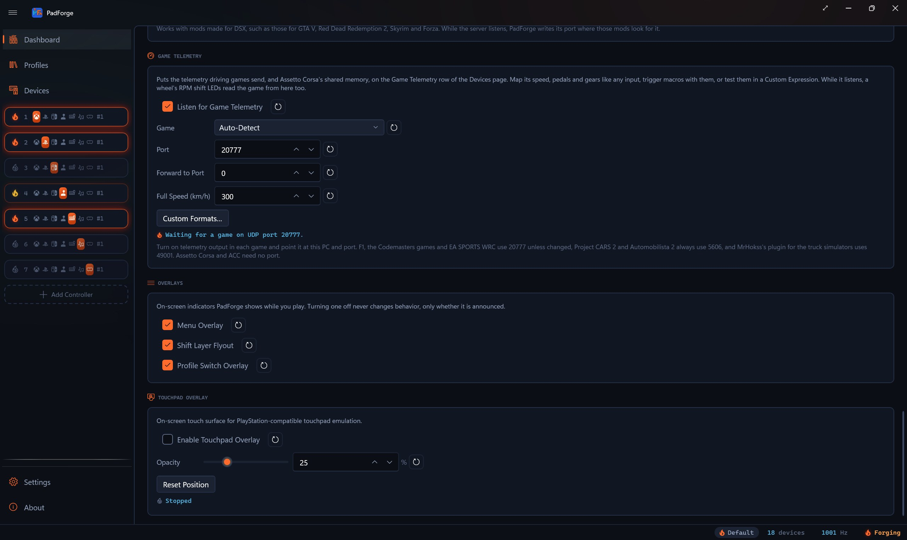
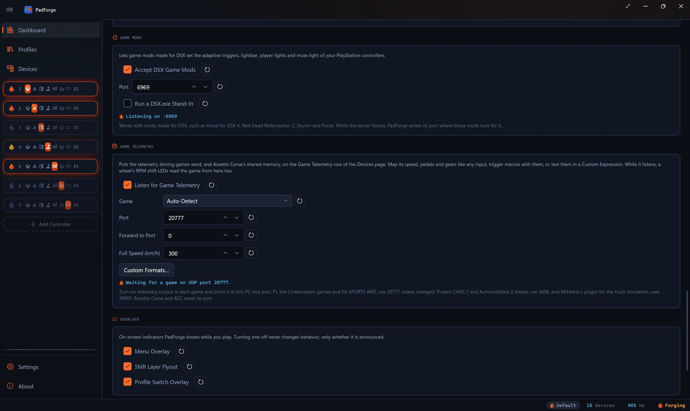
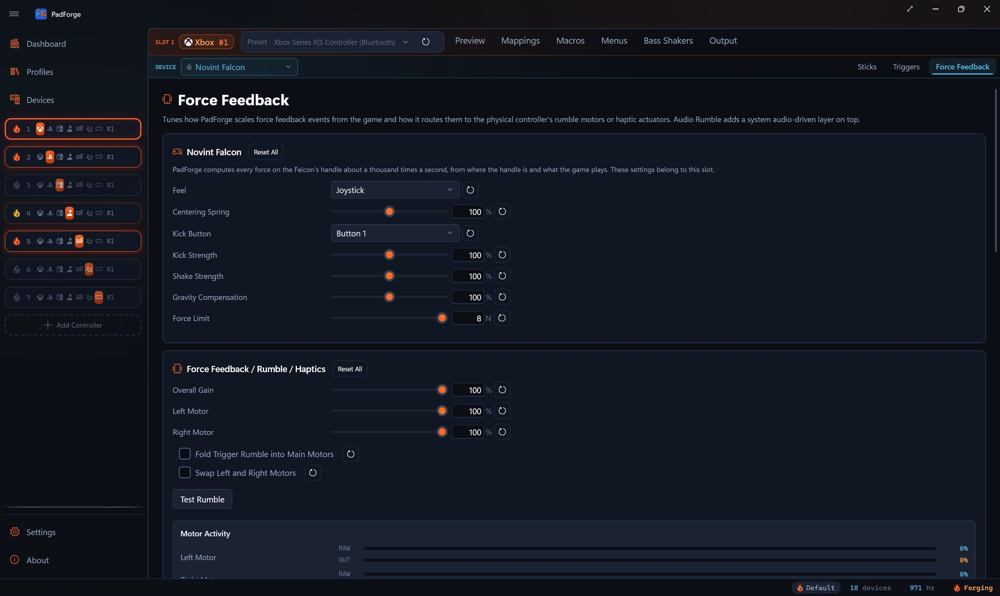

PadForge
Press
& media.
Official images and product information for stories about PadForge.
Download press kitScreenshots, logos, fact sheet & reviewer guides for 5.2.0ZIP · 3.2 MB

PadForge 5.2.0Driving games' telemetry as controller inputs, DSX game mods with no DSX installed, the Novint Falcon, keyboard screens, and DualSense haptics on every rumble pad
Release notesPadForge 5.2.0
What's new


- Game TelemetryDriving games send PadForge their speed, RPM, gear, pedals and steering, from Forza, F1, EA SPORTS WRC and the Codemasters rally games to Assetto Corsa, Project CARS 2 and the truck simulators. They appear as a controller row of their own, to map, to start macros with, or to play adaptive trigger effects on a DualSense. Custom Formats reads a game PadForge does not know.
- Game mods without DSXFan mods that give the Grand Theft Auto games, Red Dead Redemption 2, Skyrim and others adaptive triggers send to a program named DSX. PadForge takes its place: their trigger effects, lightbar, player lights and mute light play on the PlayStation controllers on PadForge's virtual controllers, with no DSX installed.
- Novint FalconThe Falcon's handle becomes a stick and its grip's buttons become buttons, and a game's rumble and force feedback push back on the handle, through Force Dimension's SDK. No Falcon has run against PadForge yet.
- Keyboard screensThe screens on Logitech's GamePanel keyboards, the Mad Catz S.T.R.I.K.E. 7 and a phone running Logitech Arx Control show the profile, a clock, play time, a stopwatch, a picture or a PlayStation controller's lightbar color, and the keys beside them map as buttons. None of these screens has run against PadForge yet.
- Haptics as rumbleA game that plays a DualSense's haptics as audio now rumbles every rumble pad on that virtual controller, and bass shakers follow it.
- HIDMaestro 2.1.0Virtual Xbox 360 controllers keep working through sleep, and every frame arrives once and in order. In HIDMaestro's own test with every processor busy, a virtual DualShock 4's slowest frame took 1.4 ms instead of 360.
- DualShock 4 headsetOver Bluetooth, a DualShock 4 plays through its headphone jack and its headset microphone works. A second-model DualShock 4 on a cable now plays PadForge's sound through its headphone jack too.
In motion
The 5.2 film
140 seconds. Music and on-screen text, no narration.
PadForge 5.2
2:20 MP460 fpsNew in 5.2.0
A 140-second film with music and on-screen text, and no narration. An Xbox controller becomes the Xbox 360 pad, DualSense or Steam Controller a game expects. The film then shows what is new in PadForge 5.2: driving games' telemetry mapped like a controller's inputs, DSX game mods with no DSX installed, the Novint Falcon, the screens on Logitech keyboards, DualSense haptics on any rumble pad, a DualShock 4's headphone jack, and HIDMaestro 2.1, which holds input when every processor is busy. In HIDMaestro's own test, a virtual DualShock 4's slowest frame took 1.4 ms instead of 360. It tours mapping, force feedback, motion, phones and remote play, and ends on the price: free.
For reviewers
Reviewer guides
Routes and step-by-step sessions for a review of 5.2.
The brief helps you pick a route for the hardware you have. The field guide gives each session its equipment, setup, steps, what a pass looks like and how to reset. The procedures follow the documentation and were not run while the guides were written.

Reviewer brief
4 pages PDF129 KBUpdated for 5.2.0

Reviewer field guide
29 pages PDF534 KBUpdated for 5.2.0
In the app
Screenshots
Full resolution. Original proportions.


Game Telemetry
2560 × 1528 JPGNew in 5.2.0
Custom telemetry formats
2560 × 1528 JPGNew in 5.2.0


Game mods
2560 × 1528 JPGNew in 5.2.0


Novint Falcon
2560 × 1528 JPGNew in 5.2.0

Mice and keyboards
2560 × 1528 JPG

109 languages
2560 × 1528 JPG

Button mappings
2560 × 1528 JPG

Macros
2560 × 1528 JPG

Controller audio
2560 × 1528 JPG

Steam community layouts
2560 × 1528 JPG
Identity
Brand assets
The PadForge logo and app icon,
with transparent backgrounds.


The project
About PadForge
PadForge is a free controller remapper for Windows. It maps gamepads, wheels, flight sticks, keyboards and mice onto as many as 16 virtual controllers, and it knows 1,110 devices by their USB identity. Players can tune stick response and gyro aiming, build macros and save profiles for individual games. PadForge also imports supported Steam community layouts and connects browser-based controllers. Its source code is available under CC BY-NC-SA 4.0.
“PadForge shines best in its incredibly vast range of supported controller types.”
 Softpedia editor's review Editor's Pick · rated 5 out of 5
Softpedia editor's review Editor's Pick · rated 5 out of 5